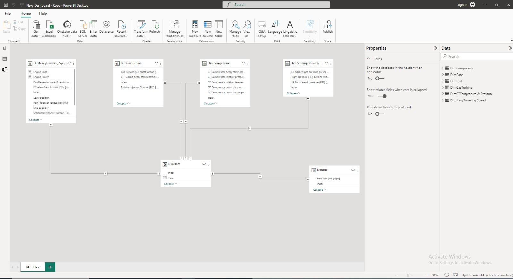

This project demonstrates my skills in data warehousing, data visualization using Power BI, utilizing DAX language in feature engineering, and data modeling. The project involved developing a dashboard to enable monitoring of the Lone Star Navy vessel performance and most important readings.
I began by compiling the data from NASA in an Excel sheet format. I then created a date table to track the attributes over time. Next, I designed the layout of the data warehouse by splitting the columns based on the data warehouse optimal design. The final design consisted of one Role Playing Dimension (the date table) and four Fact tables.
Once the data warehouse was complete, I used Power BI to create a dashboard with a variety of visualizations, including charts, tables, line charts with time slicers, and gauges. The dashboard enabled users to monitor the vessel's performance in real time and identify any abnormal conditions.
Some of the key features of the dashboard include:
Overall, this project was a valuable opportunity to demonstrate my skills in data warehousing, data visualization, and data modeling. I am confident that the skills I gained from this project will be valuable in my future career.